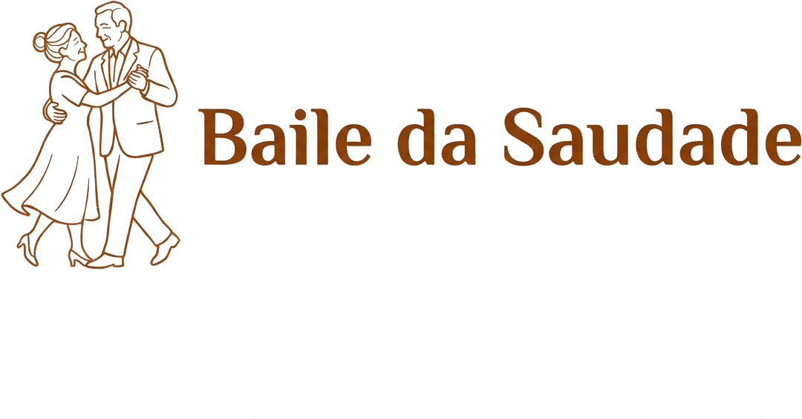

Baile da Saudade

Uma iniciativa DeCarvalho Consultorias & Serviços
Convivência intergeracional, valorização cultural e bem-estar da 3.ª idade
Celebrar a vida em todas as idades
O Baile da Saudade é uma iniciativa da DeCarvalho dedicada à convivência intergeracional, à valorização cultural e ao bem-estar da terceira idade. Promovemos eventos temáticos, formações, atividades lúdicas e excursões que aproximam gerações e fortalecem o sentido de comunidade.
Missão
Promover qualidade de vida e conexão social entre a população sénior, valorizando saberes culturais e criando pontes entre gerações.
Visão
Ser referência em Moçambique em iniciativas que celebram e dignificam a terceira idade, através da música, dança e partilha intergeracional.
Eventos, formações e atividades
Eventos temáticos
Bailes, saraus e encontros culturais que celebram a música, a dança e as tradições moçambicanas.
Formações e workshops
Sessões de bem-estar, memória, saúde e atividades criativas adaptadas à terceira idade.
Atividades lúdicas
Jogos, tertúlias, leitura e momentos de convívio em grupo.
Excursões e passeios
Visitas guiadas a locais de interesse cultural e natural, promovendo mobilidade e descoberta.
O que nos inspira
- Convivência intergeracional
- Valorização cultural e tradições
- Bem-estar e qualidade de vida
- Comunidade e pertença
Quer saber mais ou organizar um evento?
Entre em contacto para parcerias, eventos ou atividades do Baile da Saudade. Respondemos assim que possível.